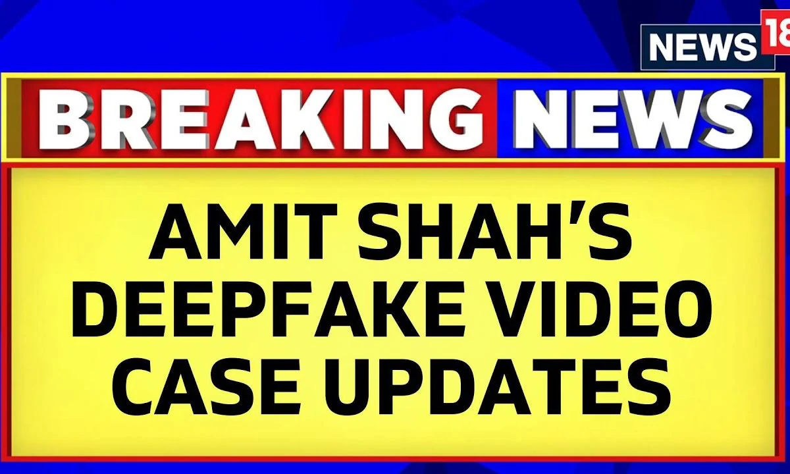

What is Deepfake?
A Deepfake is a type of artificial intelligence (AI) technology that creates realistic but fake images, videos, or audio by manipulating existing media. It uses machine learning models to generate content that can mimic real people, making it difficult to distinguish from authentic media.
How does Deepfake impact Politics?
Deepfake technology impacts politics by spreading misinformation, manipulating public perception, and undermining trust in media. It can create fake videos or audio of politicians making controversial statements, leading to confusion, false narratives, and potential damage to reputations or elections.
The Rise of Deepfake in Media
The growth of social media and digital platforms has made it easier to spread misinformation . These manipulated videos can shape public opinion, influence elections, and challenge democratic processes by blurring the line between truth and fabrication.
Deepfake technology begins to take shape with advancements in AI and machine learning, with early uses in entertainment and parody.
Read MoreDeepfake technology becomes controversial with the release of tools that allow anyone to swap faces in videos, raising concerns about privacy and misinformation.
Read MoreDeepfakes are used for political manipulation, spreading misleading videos of political figures during elections and influencing public opinion.
Read MoreRegulations and countermeasures against deepfakes are introduced, with governments passing laws and social media platforms developing detection tools.
Deepfakes complicate political discourse, eroding trust in media and prompting demands for digital literacy programs and AI-driven verification tools.
Read MoreThe future of deepfakes in politics involves ongoing ethical debates, with a focus on regulating deepfake use in the political landscape and ensuring transparency in media.
Read More